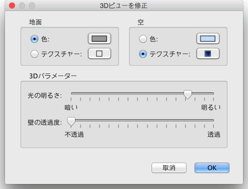

| 3Dビューを編集 | |||
メニューの 3Dビュー > 上からの眺め または、3Dビュー > 仮想的な観察 から3Dビュー の視点を選択して相互に切り替えることができます。
上からの眺め を選択した場合、上点から眺めた３つの寸法で3Dビューの間取りを表示します。
このモードは、3Dビューの枠内で
マウスの左ボタンを押したまま左または右に動かすと 仮想的な観察 を選択している場合、上から眺めている仮想的な人間の視点はまた間取りプランで作成されます。 仮想的な人間の移動した位置および角度はプランおよび3Dビューで同時に更新されます。 この仮想的な人間は3つの指標に囲まれています。
|


|
マウスポインタが仮想的な人間の肩にある場合、
仮想的な人間の頭または体の角度をドラッグ&ドロップで変更できるポイントを表示します。 その他3Dビューの属性の編集はメニューの 3Dビュー > 修正... を選択して下さい。  3Dビューの枠では、仮想的な人間の領域・高さ・色・地面および空のテクスチャ・
壁の透過性を
変更 することができます。 |
|